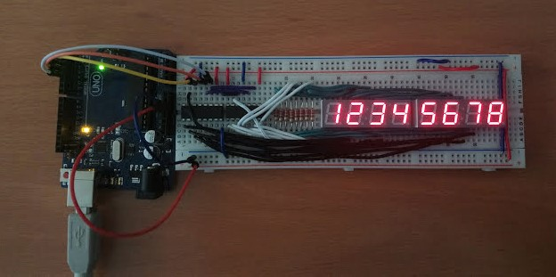
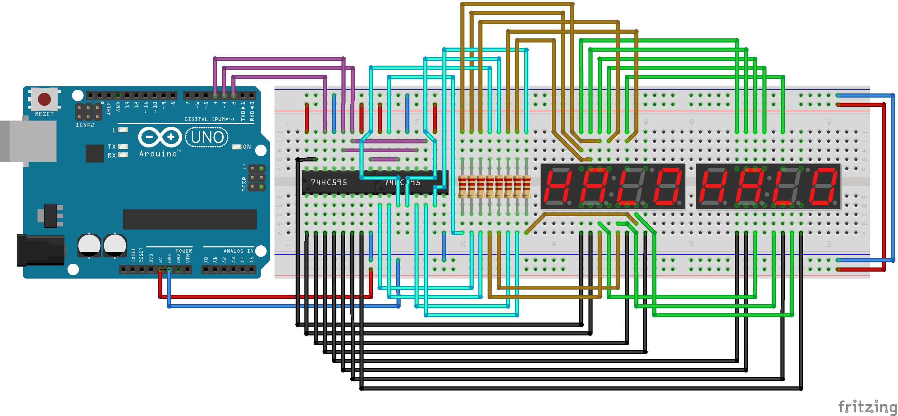
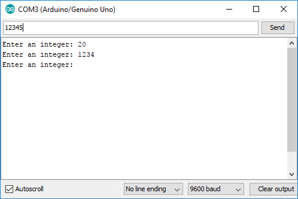
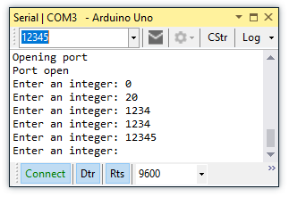

Worksheet Exercises
- writeNumber
Task
We are going to create a program to write non-negative integers to a set of 7-segment displays.
To send the program the number to display, we will open a serial connection to the Arduino over USB.
Hardware Setup
In this setup, we use two common-anode 7-segment clock displays to display the numbers, and two 74HC595 shift registers to allow us to send data to the 7-segment display using only 3 pins of our Arduino. Without the shift registers, we would need to connect 16 digital output pins to control the displays. The shift registers allow us to send information serially (i.e. one bit at a time), store the values in the chips, and output to the displays in parallel.
For more information about shift registers, see the Arduino ShiftOut Tutorial.
 Fritzing schematic: apsc160_display.fzz| Component | Count |
|---|---|
| Full Size Breadboard | 1 |
| Shift Register (74HC595, 14-DIP) | 2 |
| 4 digit 7-Segment LED Clock Display (Common Anode) | 2 |
| 220 Ohm Resistor | 8 |
Software Implementation
For this program, we provide a library to handle the displayWrite(...)
functionality, since this is not part of the Arduino API. This library assumes
the exact hardware configuration as given in the Hardware Setup
above.
- Header: DisplayWrite.h
- Implementation: DisplayWrite.c
To add these files to your program in the Arduino IDE, download them somewhere known on your computer, and go to "Sketch > Add File..." and select both files. In Visual Studio with Visual Micro, right-click on the project and select "Add > Existing Item..." to add the both the header and source files.
The main program sketch is below. Note that on the Arduino, an
integer can only store up to a maximum value of \(2^{15}-1=32767\).
To allow up to 8-digit numbers, we use the long data
type, which has a maximum value of \(2,147,483,647\).
Running the Program
To send data to the Arduino, we will use the Serial Monitor. In the Arduino IDE, you can show the Serial Monitor by clicking on the icon in the top-right of the IDE. This will show the following window:
The monitor should display the prompt from our program. Enter an integer in the top textbox and click send or hit the Enter key. The program should print the number back to you in the monitor, as well as display it on the 7-segment displays.
To open the Serial Monitor in Visual Studio using the vMicro plug-in, navigate in the menus to "vMicro > Debugger > View Port Monitor".
The monitor should display the prompt from our program. Enter an integer in the top textbox and hit the Enter key to send it to the Arduino. The program should print the number back to you in the monitor, as well as display it on the 7-segment displays.